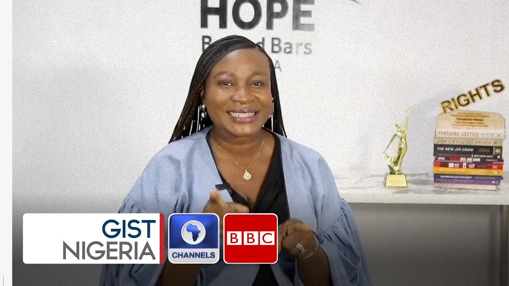

Funke Adeoye, The Light Behind Bars, and the Hope Beyond Them
In a world that often forgets those behind bars, Funke Adeoye walks into prison cells not with judgment, but with justice. A voice for the voiceless. A hand extended in the darkness. A changemaker whose heartbeat syncs with the broken rhythms of Nigeria’s forgotten souls.
She is not a celebrity. She does not carry titles that glitter. But what she does carry is far more powerful, a burning belief that justice must reach even the lowest corners of society. And in doing so, Funke Adeoye has become a quiet revolution with a loud impact.
The Woman Who Chose the Forgotten
Funke could have chosen comfort. With her legal training and talent, she could be behind the glass towers of big law. Instead, she chose to stand between injustice and the people crushed beneath it. She became a human rights lawyer, yes, but more than that, a lifeline. A defender. A rebuilder of hope.
She founded Hope Behind Bars Africa, not just as an NGO, but as a bridge, one that connects prisoners, especially the innocent and abandoned, to legal aid, dignity, and a second chance at life. Because to her, prison is not the end. It’s a place where light can still reach.
Why Her Work Matters, Now More Than Ever

In Nigeria and across much of Africa, prison is where hope goes to die. Thousands of people languish behind bars without trial, without lawyers, without a single voice raised for them. Some are guilty. Many are not. But almost all are poor, voiceless, forgotten. Funke didn’t look away. She walked in.
Through her work:
- Wrongfully imprisoned individuals have regained freedom.
- People who committed crimes out of desperation now have legal representation and paths to reintegration.
- Entire communities have seen that justice is not a privilege, it is a right.
She is not just freeing people. She’s dismantling the cycles that send them to prison in the first place.
Justice with a Heart, Advocacy with a Soul
But Funke is more than a lawyer. She’s a social entrepreneur, which means she doesn’t just defend people, she reimagines the system.
Hope Behind Bars Africa is not a charity. It’s a movement.
- It empowers ex-inmates with skills to rebuild their lives.
- It uses data and technology to track injustices and gaps in the justice system.
- It pushes for policy reform so that future generations don’t inherit a broken structure.
- And perhaps most powerfully, it turns former prisoners into advocates, giving them purpose, not pity.
She believes in a justice system that restores, not just punishes.
A Recognized Global Changemaker
Funke’s light hasn’t gone unnoticed.
She is an Ashoka Fellow, a global community of changemakers tackling the world’s most pressing issues with bold innovation.
She’s also a Young Global Leader of the World Economic Forum, standing among thinkers and doers reshaping the 21st century.
But accolades aside, her greatest reward is this:
- Every time someone wrongly imprisoned walks free.
- Every time a former inmate chooses peace over crime.
- Every time a system bends toward compassion instead of cruelty.
Giving Her Flowers, Now, Not Later
We’re often quick to celebrate those who’ve passed. But Funke Adeoye is a hero among us, still walking the path, still showing up in courtrooms, still entering prison gates with papers, patience, and prayer.
She is a reminder that justice is not abstract. It is personal. And it lives in the hands of those bold enough to fight for it.
Her work is slow. Painful. Often invisible to the wider world.
But it is sacred.
To You, the Future Changemaker
You don’t need a cape to change lives.
Sometimes, you just need courage. To stand where it hurts. To speak where it’s silent. To believe where others have given up. Funke Adeoye did not wait for the system to be fixed. She became the one who fixes it. So, what’s stopping you?
Spotlite Africa proudly gives Funke Adeoye her flowers, not just for what she’s done, but for who she’s becoming, and for who she’s helping others become.
She is proof that hope can grow in the darkest places.
And that justice, when carried with love, can set even the deepest captive free.